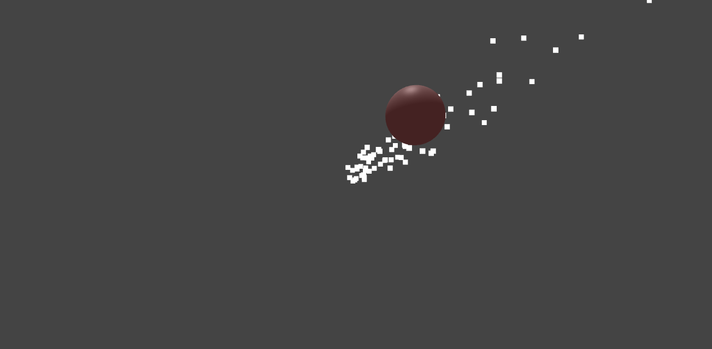
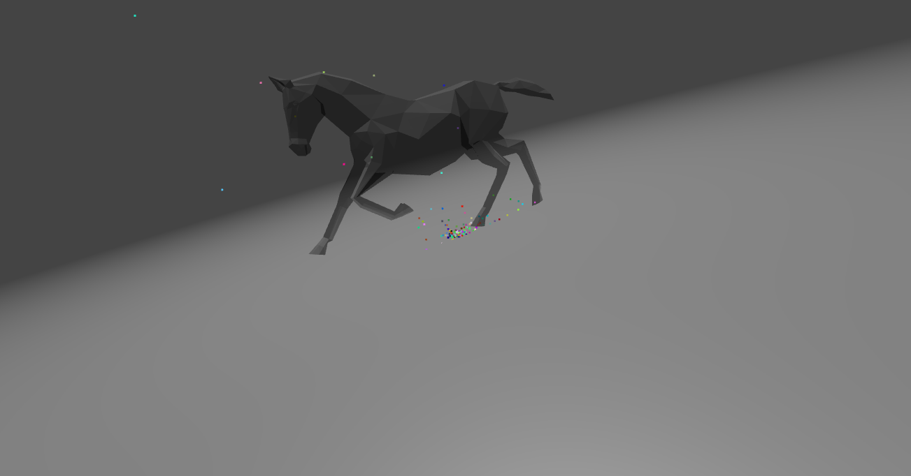
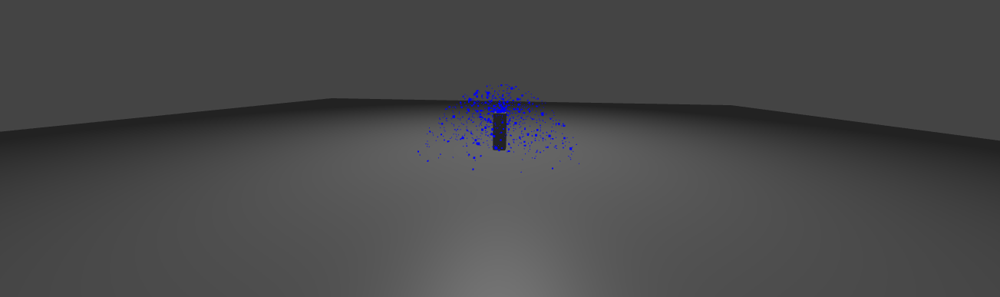
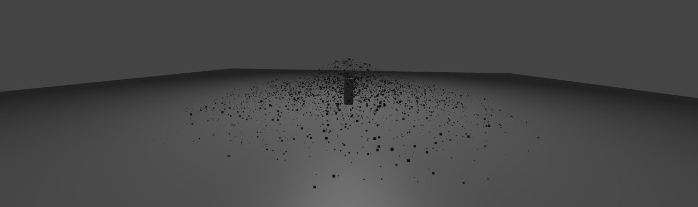
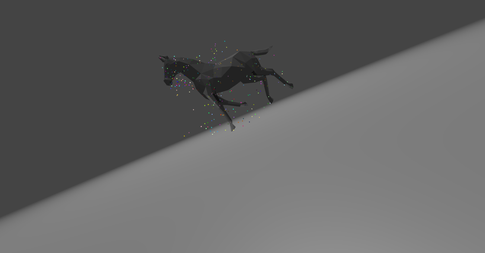
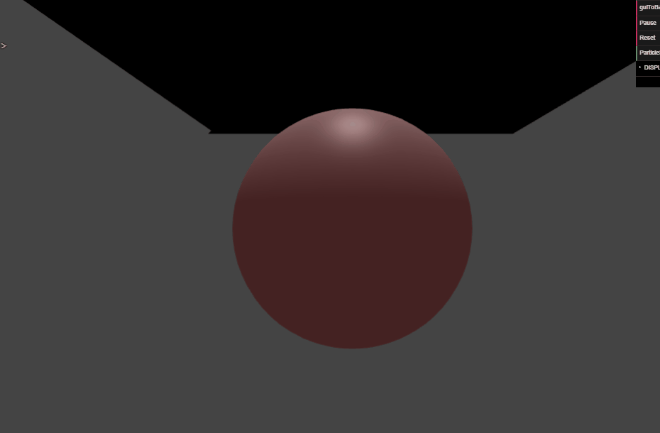

COS426 Assignment 4Animation — Writeup
- (1.0) Euler
- (1.0) Sphere source
- (1.0) Animated mesh
- (1.0) Uniform distribution
- (1.0) Ground plane
- (1.0) Axis box
- (1.0) Sphere collision
- (2.0) Spring system
- (3.0) Your system
- (1.0) Rendering
- (1.0) Art
Euler
Euler calculates a net acceleration based on the force of gravity and accelerators and uses that to update the velocity. Particles move past the attractor, though, so that's kind of sketchy. :(

Sphere source
Using the algorithm described in the lecture slides, particles randomly pop out of places on the sphere. Also, each time you refresh the page, you'll see particles of a new color and size! You can view this in action on the "basic" animation.

Animated mesh
From the array of faces, I use Math.random to pick a random face index. Then, I use (a + random * (b - a) + random * (c - a)) to find a random location on the face, where a, b, and c are the three vertices.
Uniform distribution
This was my valiant attempt to implement this Wolfram Alpha link. Sadly everything was showing up weirdly, but if you look at the comments in the animate initializer, you'll see that I at least tried. Or, we could spin this as my attempt to make a defecating party pony.

Ground plane
Two options, sink or bounce. If sink, then as soon as ax + by + cz <= w, kill the particle. If bounce, we take advantage of the fact that the ground plane is facing the y-axis and just make sure that the direction vector is positive (heads back up again).
Fountain sink:

Fountain bounce:

Axis box
Similar to the ground plane implementation, except instead of ax + by + cz <= w as the constraint where we kill the particle, we instead check if the position is within the bounds of the min, max values of the box. If so, then we kill the particle (or bounce it), accordingly. Oh, by the way, the boxes kind of have to be axis-aligned. And we're assuming +y is up.
Here's the demo on some stairs: (You can tell it kind of works because nothing falls out from under the box (sink) and, well, bounce is kind of obvious)
Sphere collision
This works; when the cloth hits the sphere, the position is updated to that on the sphere and the velocity is set to zero.
Spring system
This, as you can tell by art, did not work as well. I tried to sum up the Hooke's Law forces on the four sides.
Your system
So before I had this really cool temple idea, but then I realized I needed to test my axis box stairs and I was kind of too lazy to switch it back. GG.
Rendering
The basic sphere turns out different color and size particles each time you refresh it! Also, fountain bounce emits different shades of grey particles each refresh. You could even say that it produces fifty shades of gray. Also, the party pony is kind of excellent.

Art
I didn't know it was possible to mess something up so badly, yet here this is. The cloth descends upon the sphere, thinks, "naw, not feeling it," then swoops off into the night.
